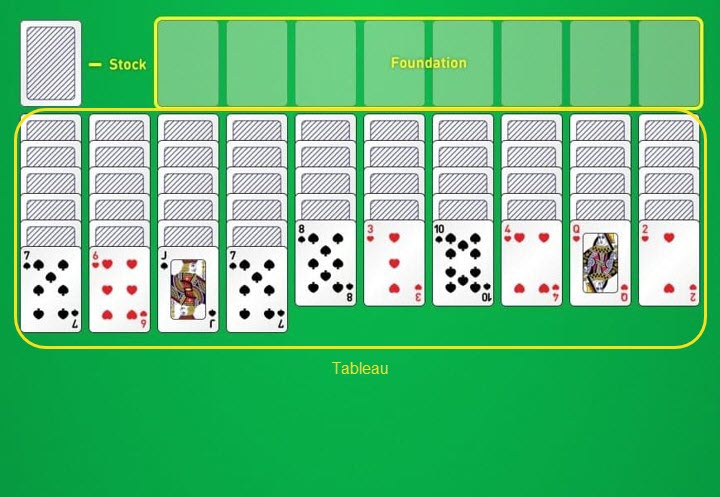

Spider Instructions
History
Spider Solitaire is one of the most popular single player card games of the digital age. While solitaire itself has been played for centuries, Spider is a more recent addition. First mentioned in the early 1900s and later made famous by Microsoft Windows, Spider Solitaire has become a favorite for players around the world, and it is easy to see why.
Spider Solitaire was first recorded in the 20th century. Some sources trace it to a 1917 book written by the famous American bridge expert Ely Culbertson, titled Culbertson’s Card Game Complete with Official Rules. While it’s unclear if Culbertson created the game himself, his book provides the earliest solid evidence of Spider’s existence.
Overview
The objective of Spider Solitaire is to arrange all 104 cards into descending, same-suit sequences from King to Ace. Each completed sequence is removed from the tableau and placed in the foundation. You win when all eight sequences have been removed and no cards remain in the tableau or stock.
Players
Spider is a single-player game.
Cards
Spider Solitaire is played with two full decks, 104 cards.
Cards can be moved to the best legal spot by clicking them or using drag and drop.
There is an Option to change the number of suits dealt; 1 Suit, 2 Suits, or 4 Suits.
Setup
The cards are dealt facedown into 10 columns in the tableau. The first 4 columns have 6 cards each, the other 6 columns have 5 cards each. The top card of each column is turned faceup; the others are facedown. The remaining 50 cards are placed in a stock pile at the top of the screen.

Tableau
You may move a faceup card onto another faceup card that is exactly one rank higher, regardless of suit.
Example: You may move the 7 of clubs onto any 8, including the 8 of clubs, hearts, diamonds, or spades.
You may place cards on higher-ranked cards of any suit, but only same-suit sequences can be moved together or removed from the tableau. Mixed-suit stacks can still be useful for uncovering facedown cards or creating temporary space, but they do not count as completed sequences.
You may move multiple faceup cards together only when they form an unbroken descending sequence in the same suit and no cards are stacked on top of that sequence.
Example: Suppose a column contains the 8, 7, and 6 of clubs in descending order, with the 6 on top. You may select the 8 and move all three cards together onto any 9. If the sequence is the 8 of clubs, 7 of hearts, and 6 of diamonds instead, the cards do not form a same-suit sequence, so you may move only the exposed 6.
If a column is empty, then any card or partial run is allowed to be moved onto it.
A full run does not have to be the only thing on a column to be removed.
Example: A column might have three facedown cards and then a full run from King to Ace in the same suit, and then the run would automatically go to the foundation, and the three facedown cards would remain.
Whenever a move uncovers a facedown card at the top of a column, that card is turned faceup and becomes available for play.
The Stock
When there are no more moves that can be made in the tableau, you can click on the stock in the upper left corner. That will move 10 cards from the stock onto the tableau, one card onto each column. It is required that there is at least one card in each column when the stock is clicked. If there is an empty column on the tableau, you must first move one or more cards onto it before you can click on the stock. If there are fewer than ten cards in play, you can no longer have at least a single card per column and thus cannot add cards from the stock.
The Foundation
When you complete a same-suit sequence from King to Ace in the tableau, the sequence can be removed and placed in the foundation.
Game Over
The game ends when all eight completed sequences are in the foundation.
Scoring
You start with 500 points. For each move you make, one point gets subtracted. For each run you remove from the tableau, you’ll get 100 extra points.
Example: If you’ve managed to make three full runs in 70 moves, you’ll have
(500-70) + (3*100) = 730 points.